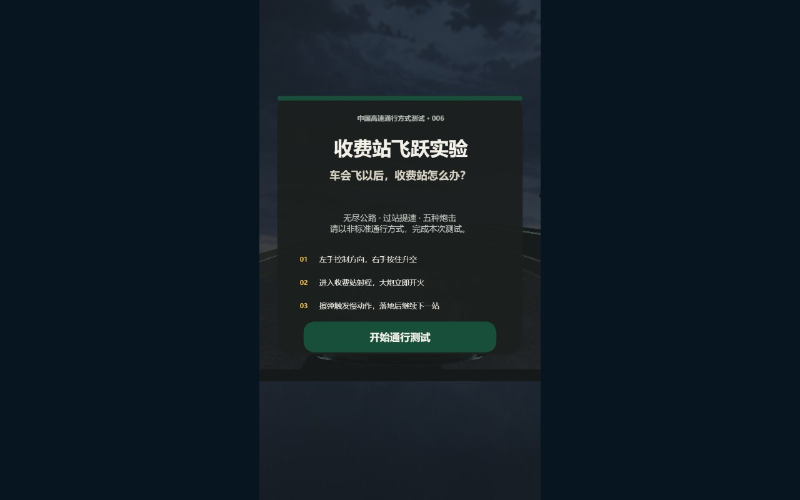
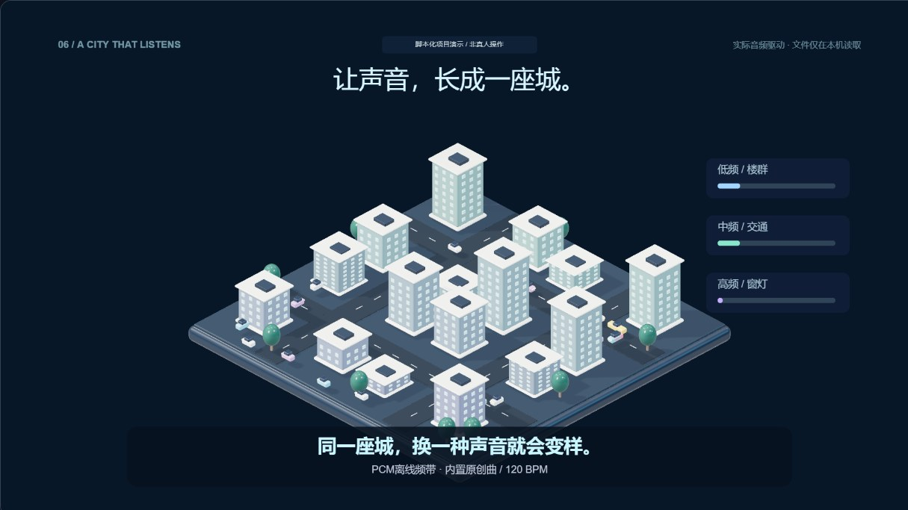

3D 小游戏一辆会飞的车，一座会开炮的收费站。起飞、擦弹，再稳稳落回公路。
01 / V0.15 实验原型
写一点人和世界的事，
做一点 AI、网页和游戏。
想法、成品和返工，都放在这里。

如果声音有形状。用观点和作品，认识同一个人。
让想法变成一次实际体验。
做出来之后，还有很多问题。
从念头到可操作的作品。
以下均为实验版本。
关于比较、工作与自我评价。
保留个人判断，也保留它的语境。
这里是拾玖的个人作品与内容网站。两条线索放在一起：一条是对人和世界的思考，一条是借助 AI 把想法做成游戏、网页和小玩意。
作品负责让你看到做出了什么，文字负责让你知道这个人怎么想。
个人创作项目，使用 AI 辅助开发与内容整理；不是公司、官方机构或培训认证中心。